Loteamento
Reserva Conforto
Cercado de belezas naturais, o estado de Goiás inspirou a escolha de um animal como símbolo do empreendimento. O tucano representa o bioma do estado e a natureza preservada que o bosque do loteamento vai abrigar, além de tornar a marca mais memorável.
Abaixo do nome, um elemento visual traduz o reflexo do pôr do sol ao entardecer no lago, localizado aos fundos do empreendimento.
Natureza, tempo e paisagem reunidos em uma identidade que apresenta o Reserva Conforto como um lugar para viver o entardecer, não só para morar.
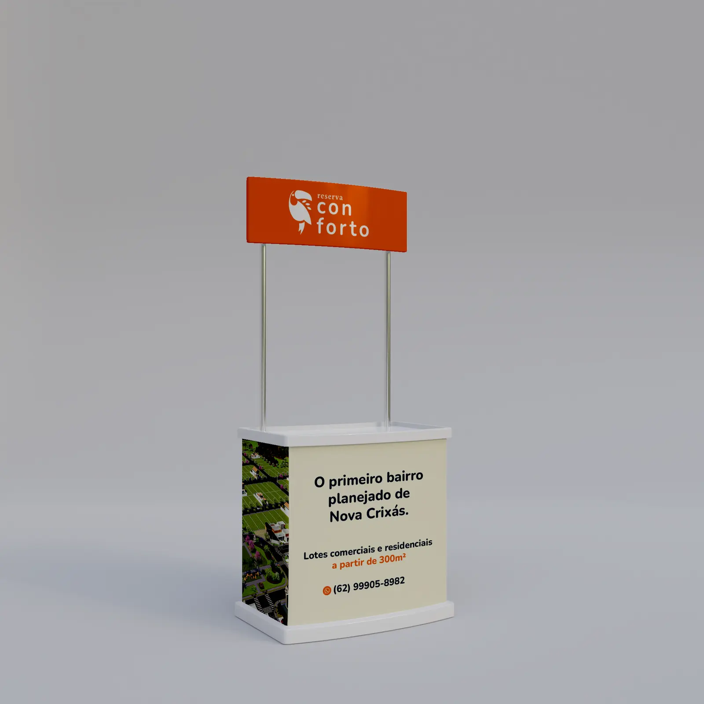
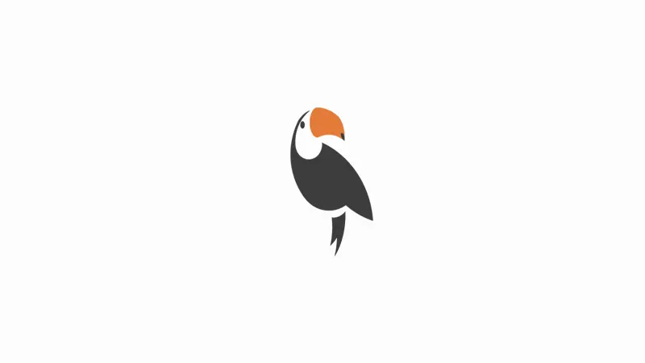
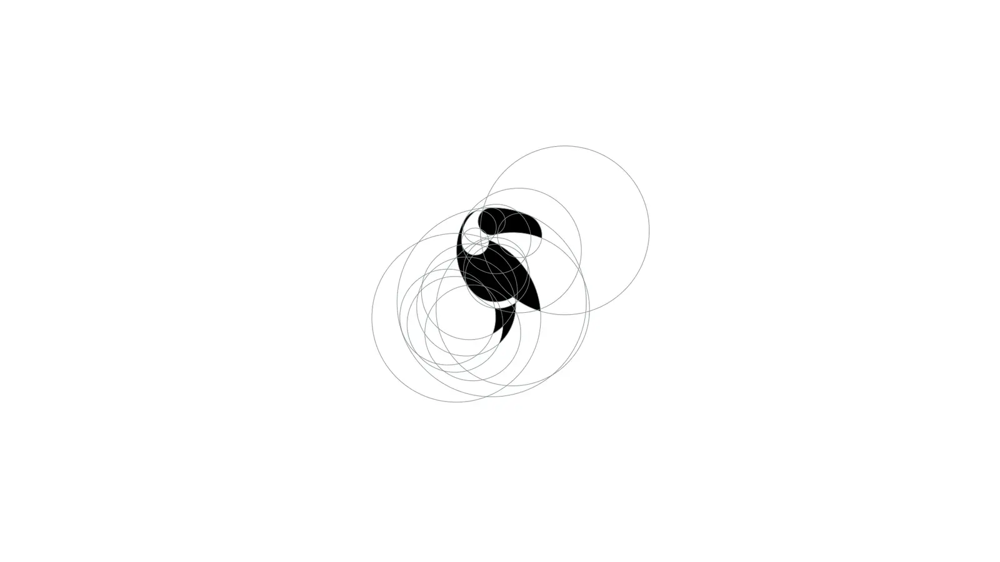
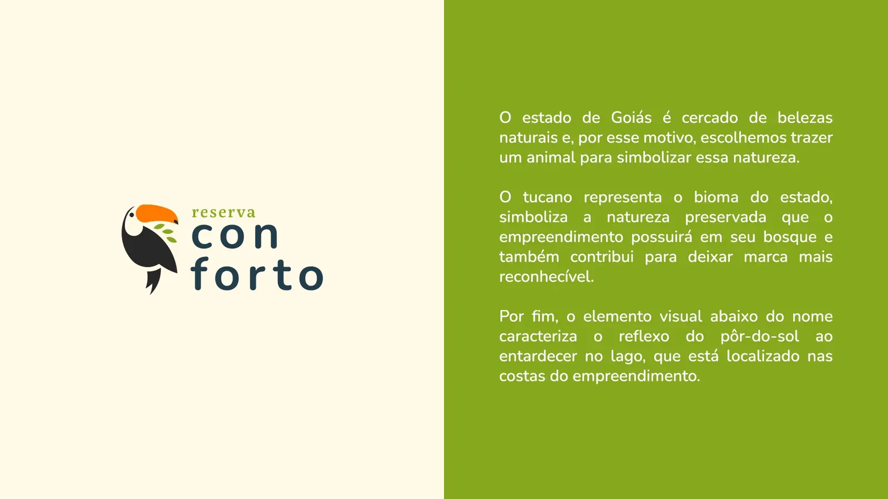
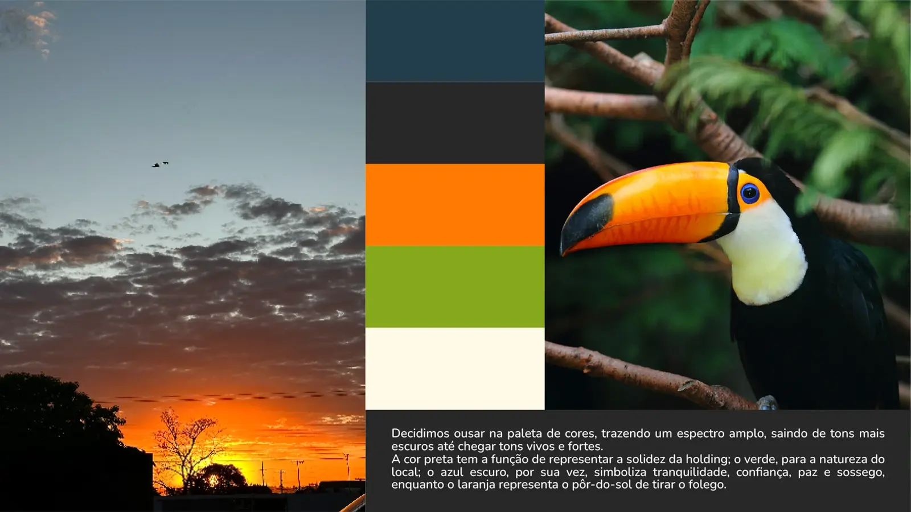
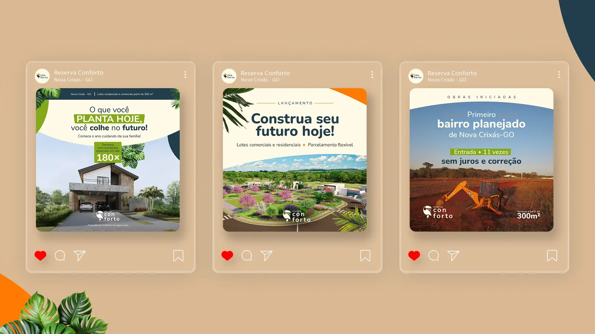
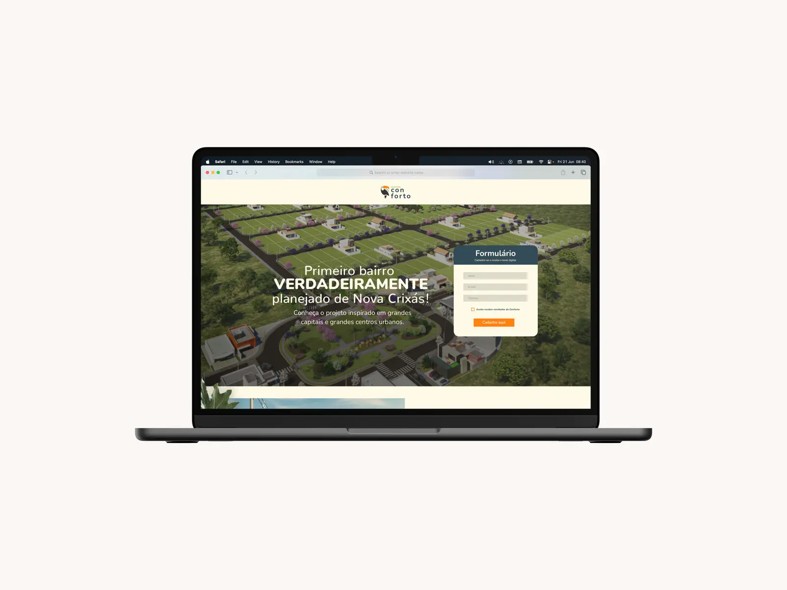
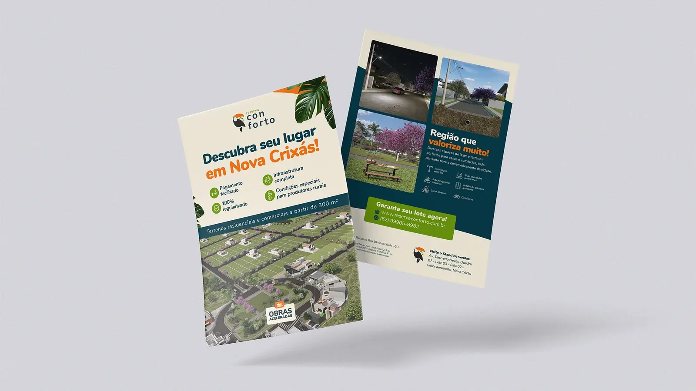
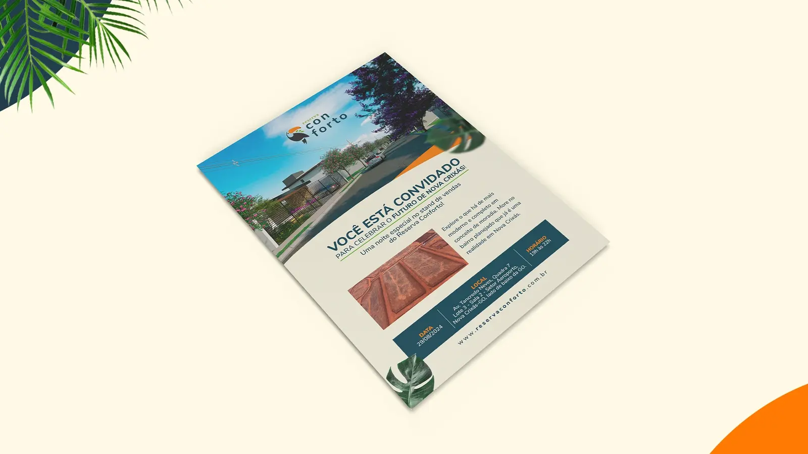
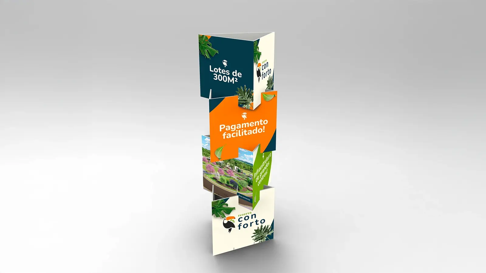
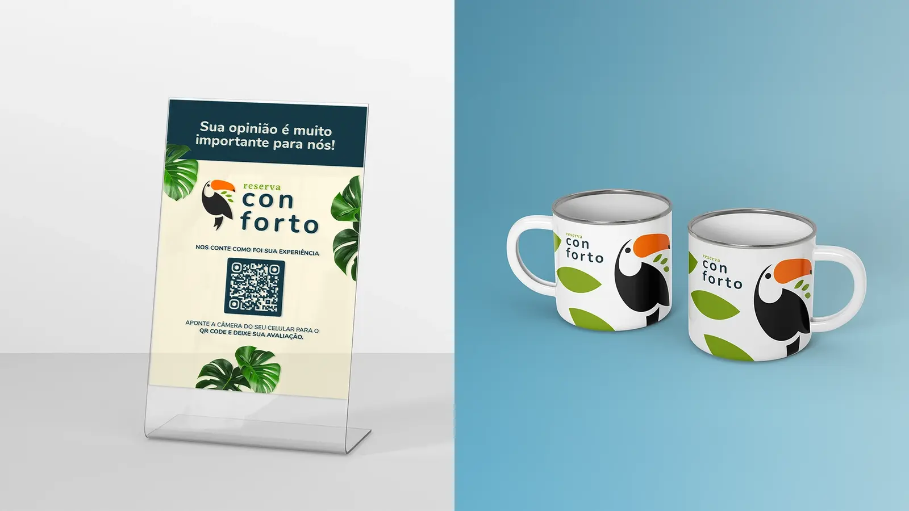
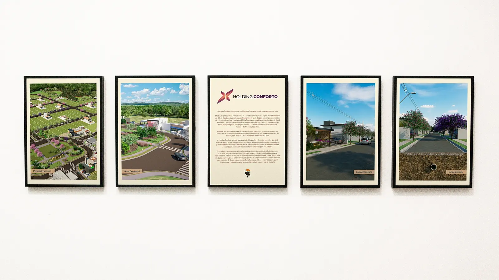
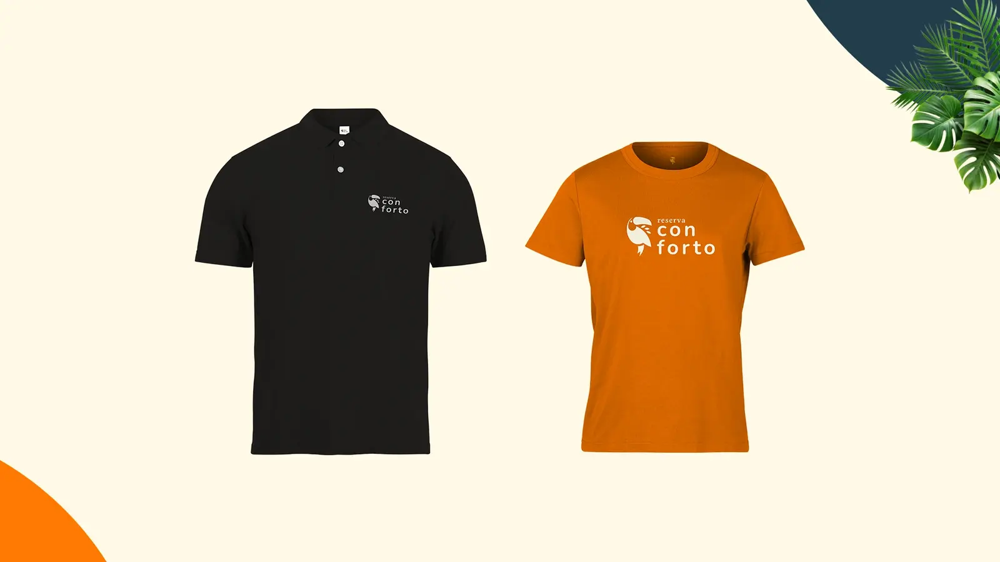
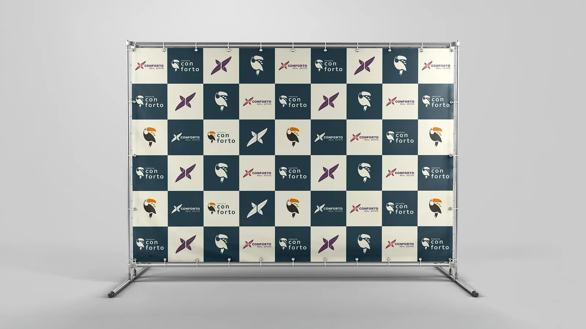
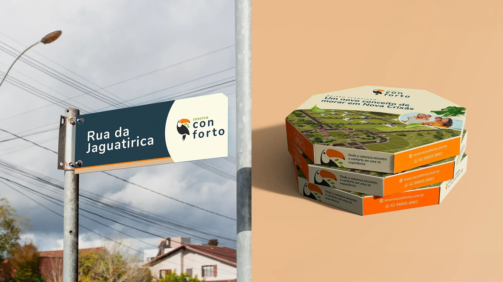
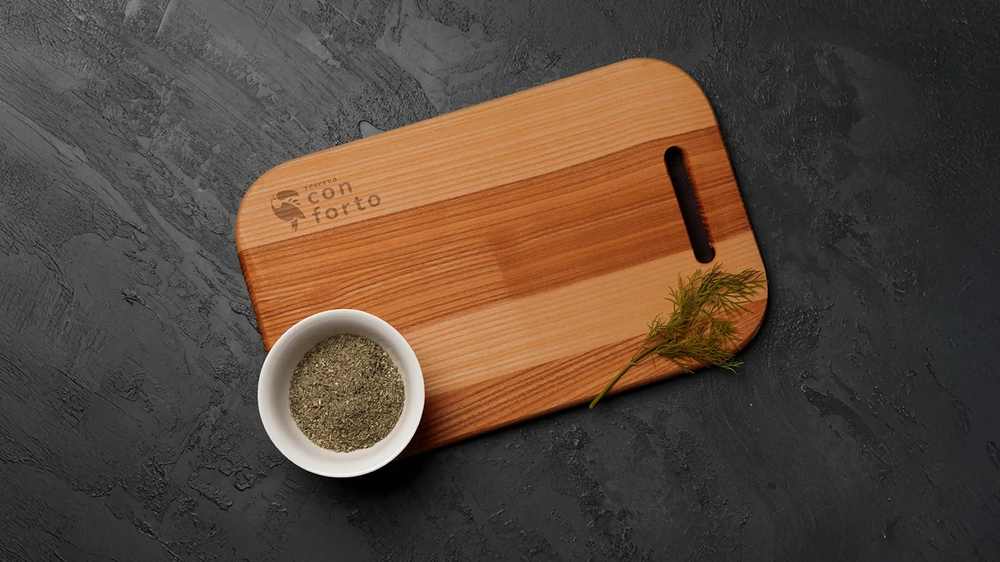